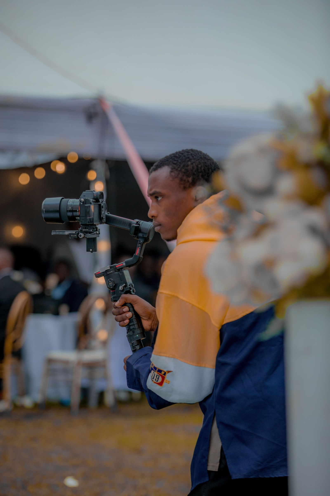
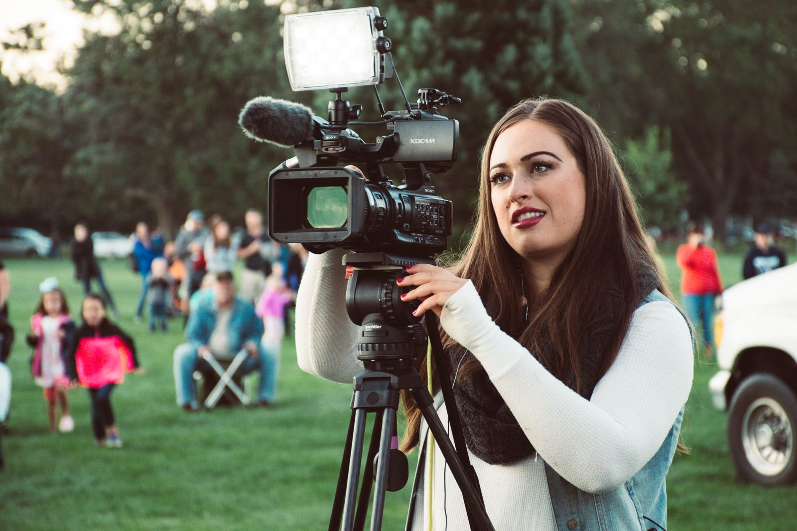

About · The person behind the second camera position
Tara Iyer, festival first.
I grew up in the third row of a dhol-tasha pathak's audience — my uncle played, my mother cooked for the troupe, and somebody had to hold the family's video camera. By the time I was twenty the camera was mine. In 2016 I stopped filming festivals as a favour and started filming them as a trade. Ten Ganesh Chaturthis later, it is still the best ten days of my working year.

Working photographs on this page are Pexels library photographs of camera operators at work, used to show the working setup honestly — they are not portraits of Tara, who is a fictional persona for this template (see the footer).


How I work
Two cameras is a promise, not a package name. On a two-camera day my second operator is the same person every season, briefed on your family's running order the week before. We work to a shared shot list, so the aarti close-up and the wide of the room are the same second, not two guesses.
Sound is half the film. Festival sound is not background. The dhol-tasha pathak, the conch, the aarti bell, the announcement mike nobody tuned — I record all of it on location with two recorders, and the edit keeps the room in the film. If a song is needed, it is your family's own singing or a licensed instrumental track, cleared in writing and listed in the delivery note.
I do not direct your festival. I will ask where the idol will turn, when the aarti starts and which doorway your grandmother uses. I will not ask anyone to repeat a moment, walk through a door twice, or hold a diya higher. What happened once is the film.
Permissions are arranged before, not argued during. Mandal routes, society balconies and riverbank positions are confirmed with the organisers in the weeks before the festival — which is why bookings close 21 days out, and why the planner says so plainly.
The kit, as facts
- Cameras — two mirrorless bodies, 4K, matched colour so the cut does not jump
- Lenses — 24–70mm for the room, 70–200mm for the aarti close-up from the back
- Sound — two field recorders, one at the musicians, one at the family; lapel mic for the priest, with permission
- Light — one small LED panel for interiors, used only where the family agrees; the pandal's own light is preferred
- Backup — every card copied twice on the night, before I sleep; originals kept one full year
How a booking runs
Dates first
Run the planner on the frames page. If your dates are open, send the form — I reply within two working days with the dates picture for your week and a short call to hear the running order.
The festival
Half the total books the dates; the balance is due on delivery. I arrive before the first aarti, not during it, and the cards are backed up the same night.
Delivery
Reels first when the festival is still warm, then the film on the date the planner promised, as downloadable files plus a private link. One round of small changes is included; the raw footage stays archived for a year if you ever want a longer cut.